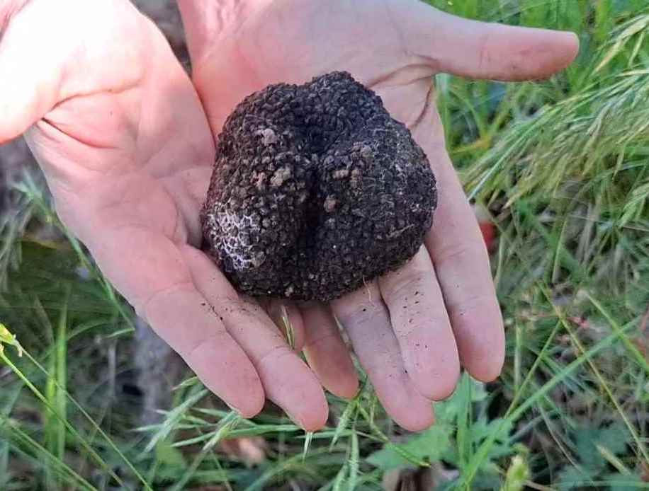
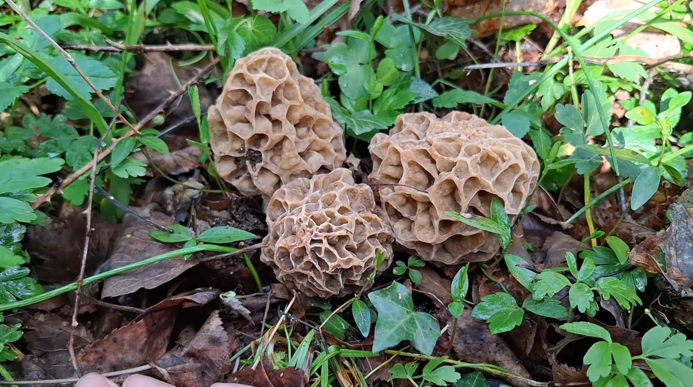
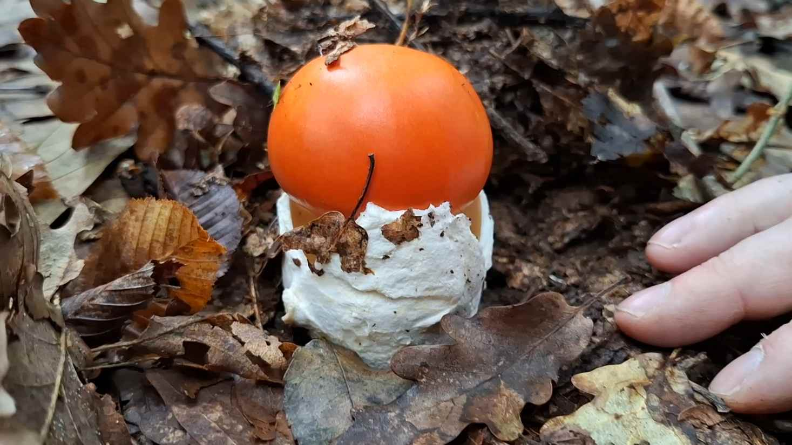
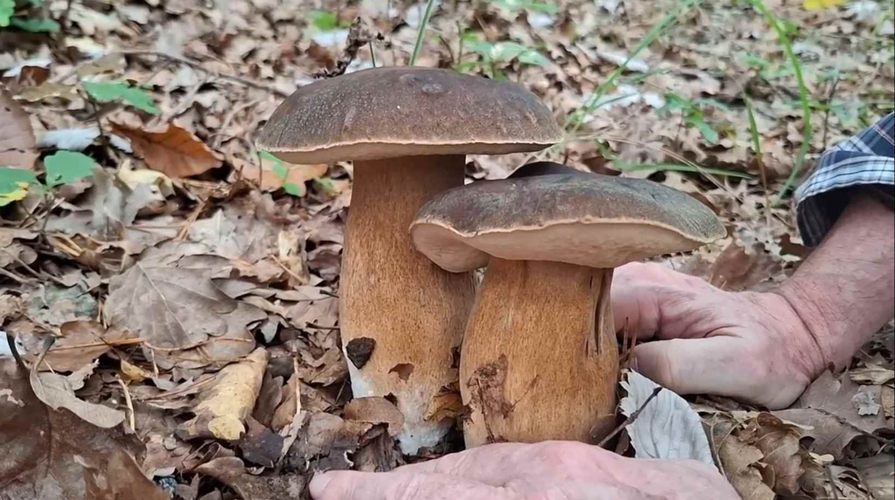
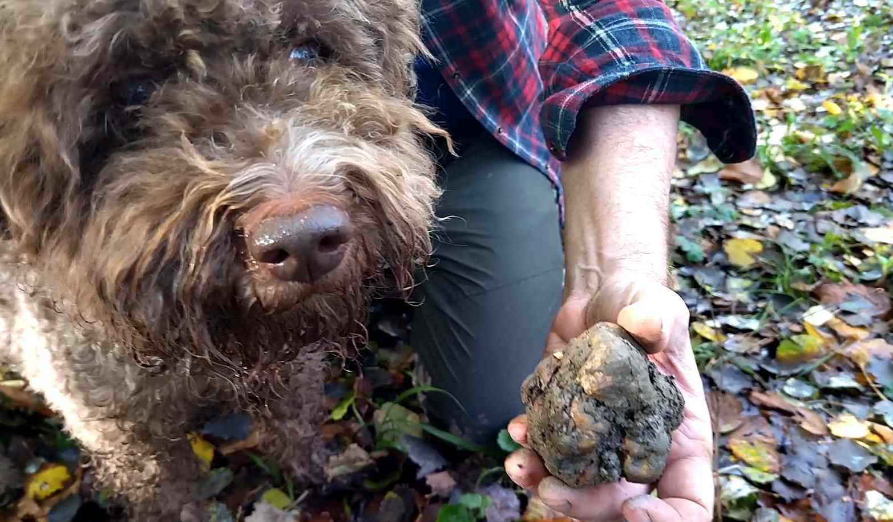
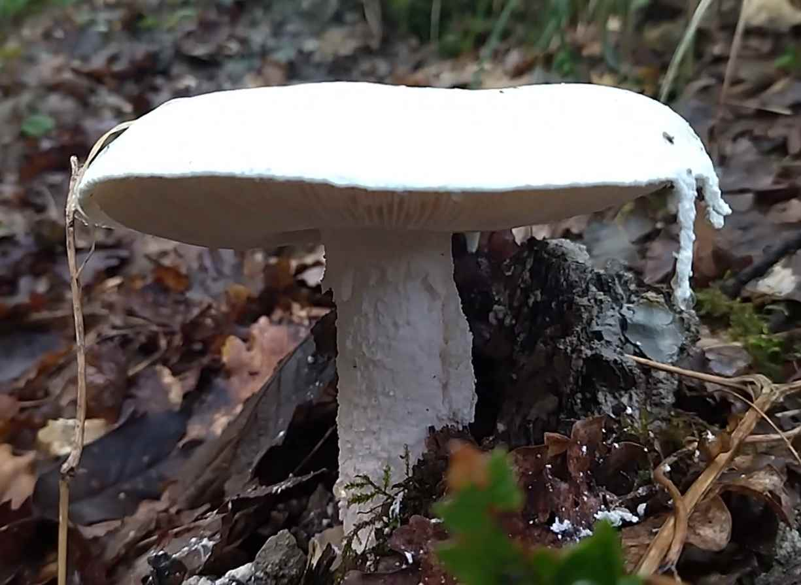
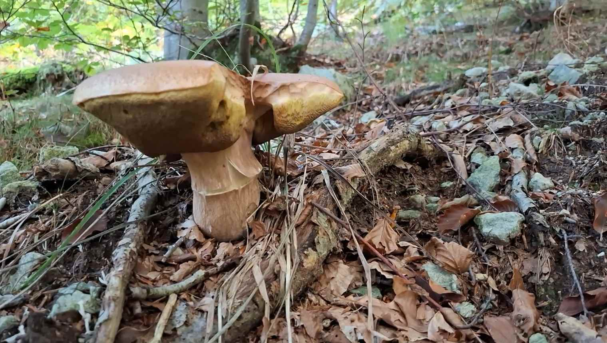
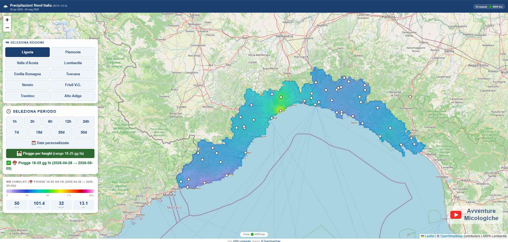
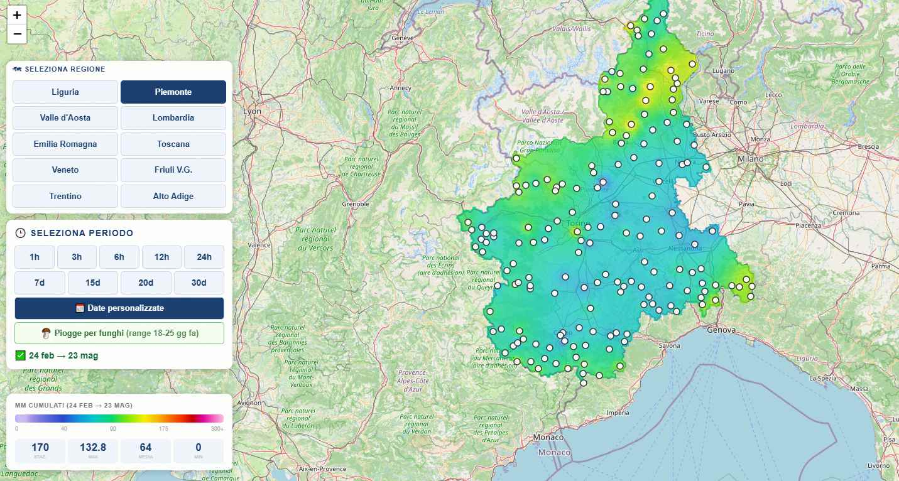

Segui il nostro diario, 12 mesi all'anno, da gennaio a dicembre, tra epigei ed ipogei, niente repertorio, in tempo reale le nostre avventure tra specie nuove, strani ritrovamenti, giornate epiche e disastrose.







Chi siamo
Una passione
che dura
dodici mesi
Avventure Micologiche è un piccolo canale nato per raccontare la vita nei boschi, alla ricerca di funghi epigei e ipogei — dai porcini al tartufo bianco pregiato.
Con noi c'è sempre Archie, il nostro lagotto romagnolo, compagno inseparabile di ogni uscita. Documentiamo giornate epiche e disastrose, specie rare e ritrovamenti strani: un diario onesto, con molti insuccessi e qualche emozione che solo il bosco sa regalare.
Mappa precipitazioni
Nord Italia
Abbiamo costruito una mappa interattiva con dati da stazioni meteo reali per pianificare ogni uscita con informazioni concrete. Trova le zone dove ha piovuto di più: non aspettare che i funghi arrivino da te, vai tu dove stanno nascendo.
1000+
Stazioni meteo
9
Regioni coperte
1 anno
Di dati storici
1h
Aggiornamento

Liguria · mm cumulati

Piemonte · mm cumulati